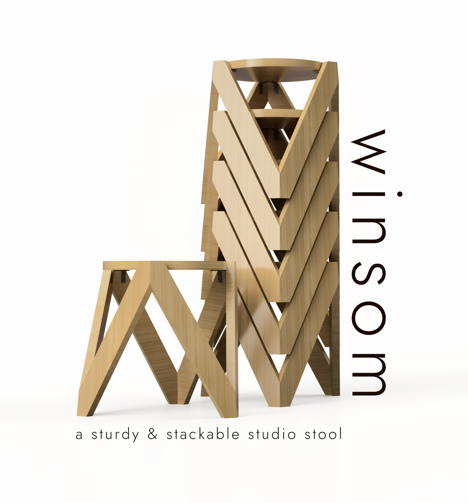
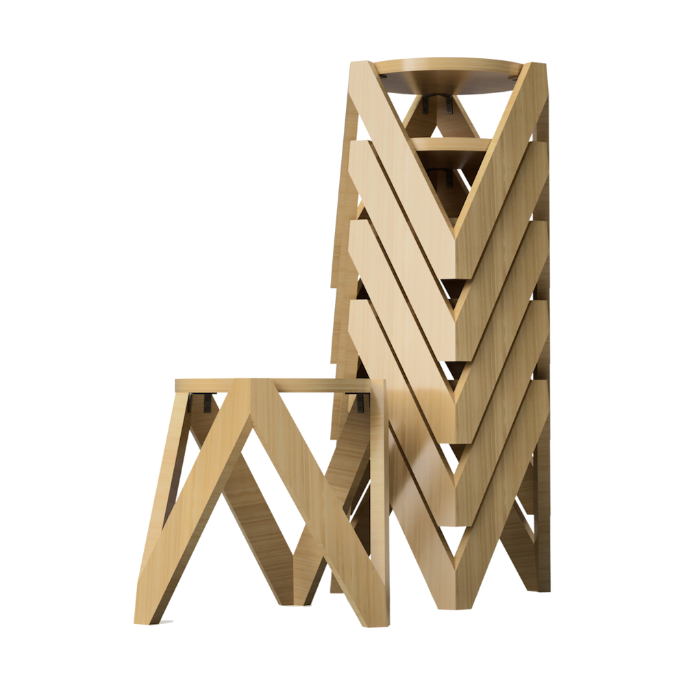
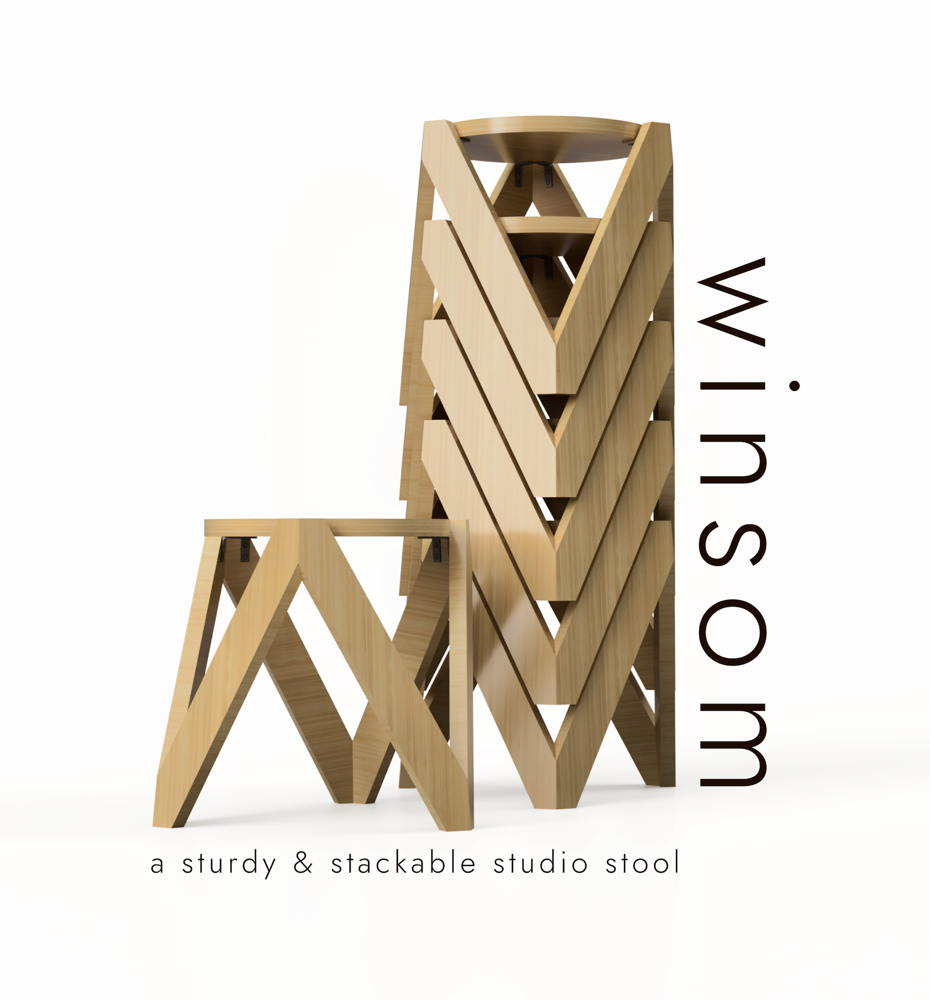

Final prototype
A sturdy and stackable studio stool
Jan 2023 - Feb 2023
Woodworking
Figma
Physical Prototyping
Photoshop
Illustrator
Sketching
Ethan Carroll, Becca Rainey
Winsom is a group project submission for the annual VTID Program Design Competition which came from the prompt: “Create a studio stool”. Winsom is a sturdy and stackable studio stool that comes with two height variations to accommodate the standard two heights of desks in our design college spaces. We created Winsom with the geometry to be stackable for easy storage and movability, considering how often the chairs and stools in studio are moved around and redistributed throughout the space. I worked on ideation, woodworking, assembly, and composed the poster. Winsom was awarded Honorable Mention in the competition results.
In addition to group ideation and preliminary sketches, my main responsibility was in the assembly of the stool and the design and composition of the poster and some of its assets.
Final prototype
